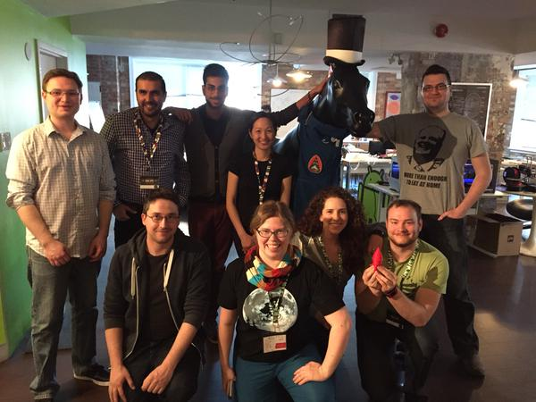
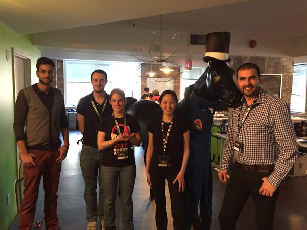
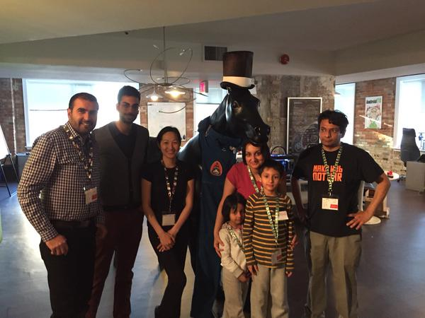
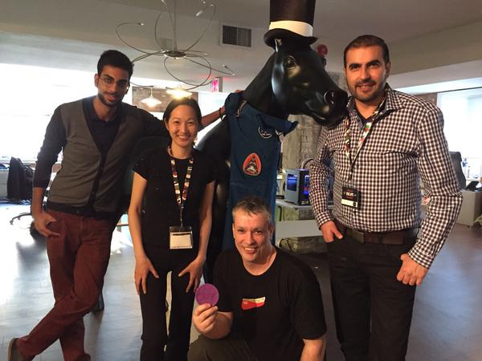
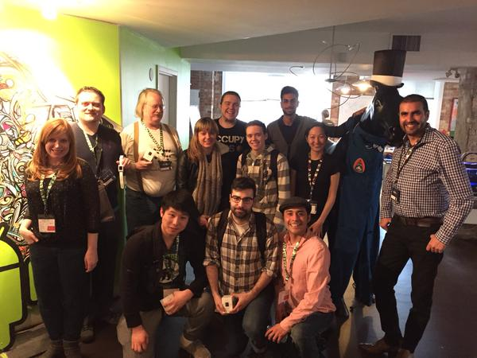
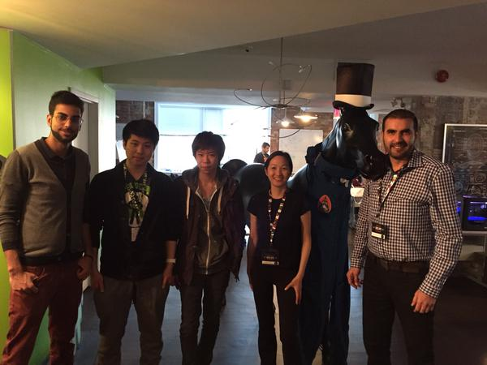

Toronto, we have lift-off!
The weekend of April 10–12th, 2015 developers, makers, engineers and entrepreneurs took on NASA-designed challenges, creating solutions that range from silly to serious, fantastical to feasible.
Congratulations to this year's winners!
SpaceApps Toronto 2015 Global Nominations

Nomination #1
Nomination #1
Mars Endeavor Video Game

Nomination #2
Nomination #2
DBNN.NASA
SpaceApps Toronto 2015 People's Choice Award
The Finder Team
SpaceApps Toronto 2015 Honourable Mentions

Our NASA Family created Z-Bot which won an honorable mention in the "Humans" category!

Alex came with his entire lab, and left with an honorable mention in "Robotics" (and his lab too)!

Look Up! used Pebble Smartwatches to win an honorable mention in the "Outer Space" category!

The Izumi team created a system to allow people to track water pollution levels!